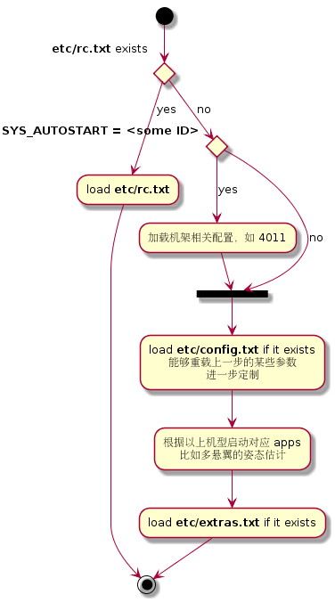

资源
Lorenz 最近重新整理了一下 wiki，非常值得一个一个页面浏览一遍。
工具链安装
主要是安装依赖并将用户加入 dialout 组及 plugdev 组
1 | $ sudo usermod -a -G dialout $USER |
然后安装 arm-gcc，注意网上可以找到一个 ppa，但是不要使用，因为版本不对。
1 | $ sudo apt-get install ia32-libs python-serial python-argparse grep |
烧程序并上传固件
如果 NuttX 更新过1
2
3
4$ make distclean
$ make clean
$ make archives
$ make px4fmu-v2_default
否则1
2$ make clean
$ make px4fmu-v2_default
上传1
$ make upload px4fmu-v2_default
经测试，这一步一定要先卸载 modemmanager
1 | $ sudo apt-get remove modemmanager |
系统启动
启动顺序由 /etc/init.d/rcS 控制，步骤：

- 检测硬件
- 加载传感器驱动
- 其他
apps
所有用于自动启动的脚本都位于 ROMFS/px4fmu_common/init.d/。
- 所以牛逼的人才自己写
etc/rc.txt，自己修改时改etc/config.txt及etc/extras.txt - 重刷固件的时候，
SYS_AUTOCONFIG = 1，导致所有参数重置（包括这个变量）。 - 重刷后依然想保留的配置（mixer, output mode, PWM range etc.），应该写在
etc/config.txt里面。
Mavlink
The mavlink application sends and receives MAVLink packets on a serial port and translates them into the onboard object request broker structure.
app 功能
- 航点管理 (waypoint management)
- 用户在地面站输入航点
- mavlink app 接收航点
- app 确定当前位置及当前激活航点的偏差判断是否到达
- 当前激活当点会作为位置控制器的输入
- 参数更新 (updating of parameters)
使用
系统启动以后自动 TELEM1 (/dev/ttyS1) 开 mavlink。
- 默认的波特率为 57600
如果希望用串口 (serial 4)，需要自己手动启动或者加到启动脚本里。
1 | nsh> mavlink start -d /dev/ttyS6 -b 460800 |
usb 口 (/dev/ttyACM0) 比较特殊，默认开的是一个 nsh，不发送 mavlink 信息。但是连上 QGC 以后，QGC 会通过 nsh 开 mavlink！。
1 | // https://github.com/mavlink/qgroundcontrol/blob/fc493d75c1e037e6d3919906c4b1a32ebe9cad91/src/comm/MAVLinkProtocol.cc#L189 |
mavlink log
Mavlink 提供三种 log 功能。
1 | mavlink_log_emergency(_fd, _str) |
这样子使用：
1 | #include <mavlink/mavlink_log.h> |
- MAVLINK_LOG_DEVICE = “/dev/mavlink”
- 这个设备由
mavlink_main.cpp注册，其它模块只打开及写入
- 这个设备由
mavlink_log.h由 mavlink 提供，不是 Pixhawk 的一部分
其它
Output Mixers
The
output mixerdefines how the controller output gets mapped to the motor and servo outputs.
- 不同飞机的 mixer 都放在
etc/mixers，文件夹内有 README 可以看文件格式定义 - 个人定制的 mixer 文件命名为
FMU_ABC.mix，然后通过MIXER = FMU_ABC来使用
Custom Model
etc/config.txt 内可以定制机架类型。如果要定制 a quadcopter with “+” configuration with ESCs connected to PX4IO and custom PWM range (1100…1900)，大概写成这样：
1 | # Generic Quadcopter + |
Circuit Breakers
断流器 (Circuit Breakers) 用来在软件上屏蔽某些模块。
例如想省去每次上电需要按 safety switch 的步骤，就可以使 CBRK_IO_SAFETY = 22027。